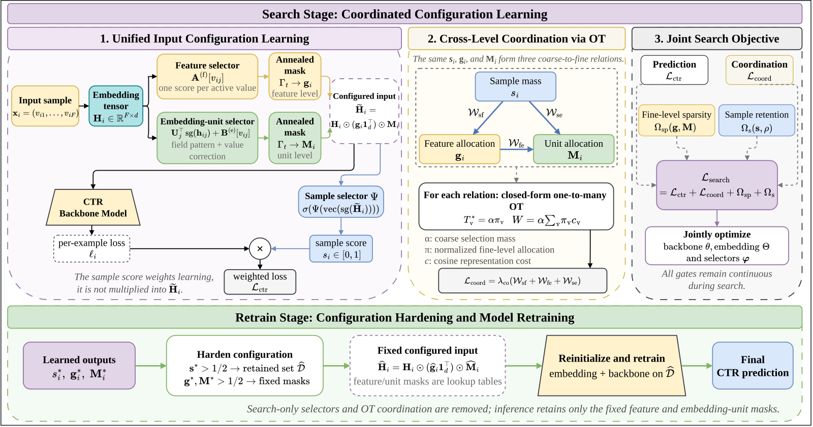
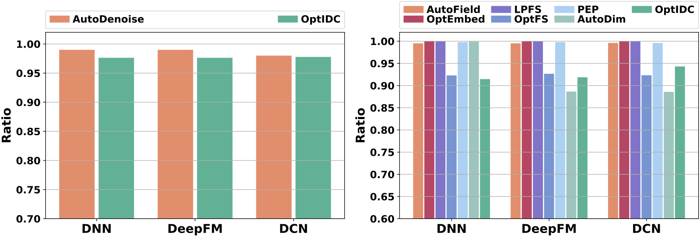

目录 · 8 节
1它到底在解决什么问题？2整体流程：先搜索，再重训3三个选择器分别怎么打分？4一致性惩罚：标题里的“最优传输”实际在做什么？5实验结果6我认为它的局限7一个推荐团队可以怎么试8一句话结论CTR 模型的输入端有三种常见删减，即丢掉质量差的训练样本、关掉没用的特征、剪掉 embedding 里没用的维度，以往的方法一次只做其中一种。深圳大学等单位的这篇论文指出，三者其实是同一个动作，都是给同一个 embedding 张量乘一个掩码，只是粒度不同。它们还互相牵连，一个特征被整个关掉之后，它内部的维度怎么剪都不再起作用。在 Avazu 上用 DNN（多层全连接网络），单独做任何一种选择只把 AUC 提高约 0.001；把三种放进一个模型一起学，并加惩罚让各层决定互相配合后，AUC 从 0.7893 提到 0.7930。以样本和特征这一层为例，惩罚把每个特征 embedding 到样本平均 embedding 的余弦距离按特征门控加权求和，再乘以样本权重，高权重样本若给离群特征开大门控就会被重罚。
做特征选择或 embedding 压缩的团队可以花十分钟读一读，因为“三层选择要一起定、而且要互相对得上”这个视角很实用，能解释为什么单独调某一层经常收效甚微。但我不建议照搬整套方法：绝对提升很小，实验只在公开数据集上做，在阿里的 AliCCP 数据上 AUC 涨了，LogLoss 反而变差；标题里的“最优传输”在这里退化成了一个加权的余弦距离惩罚，名字比实际做的事复杂得多。
它到底在解决什么问题？
用一条广告点击日志说明（示意）。每条样本有 24 个特征，每个特征是一个 16 维的 embedding，拼起来就是一个 24×16 的张量。三种选择分别作用在不同的粒度上：
| 层级（示意） | 决定什么 | 例子 | 掩码的形状 |
|---|---|---|---|
| 样本 | 这条样本参不参与训练、权重多大 | 某个刷量 app 凌晨三点的点击，判为噪声，权重压到接近 0 | 每条样本一个数 |
| 特征 | 某个特征值整体留不留 | 设备型号里一个只出现过几次的冷门值，整个关掉 | 每个特征一个数 |
| embedding 维度 | 留下的特征里，哪几维有用 | 站点类别的 16 维里只保留 6 维 | 每个特征 16 个数 |
这三层决定会互相影响。假设一条样本被判为高质量、权重是 1，但它的 24 个特征里有 20 个被关掉了，这条样本实际上只靠 4 个特征在提供梯度，样本层的“高质量”判断就落空了。反过来，如果一个特征被整个关掉，维度层还在为它的 16 维分别学掩码，那些学习完全是白费。作者把这类上下层决定对不上的情况叫做选择冲突。
论文先做了一个预实验来说明问题。在 Avazu 上用 DNN，三种选择单独做各自把 AUC 提高约 0.001；把三个选择器放进同一个模型、只靠预测损失联合训练（作者称为 IDC），提高 0.002 以上。他们还定义了一个一致性指标 SCR。计算时先把三层的决定都换算成同一张“特征取值 × embedding 维度”的表，每一格记这个维度被用到的频繁程度，三张表都用同一把尺子：某个特征取值出现次数 N 取对数 log(N+1)，对数是为了不让高频取值压过一切。样本选择那张表，每一行填这个取值在保留下来的样本里出现次数的对数，整行各维相同；特征选择那张表，保留的特征整行填它在全部训练样本里出现次数的对数，被关掉的特征整行填 0；维度选择那张表，也先填全量出现次数的对数，再把被剪掉的格子改成 0。三张表逐格取最小值求和，再除以逐格取最大值的和，结果越接近 1，三层选得越一致。在五组不同的联合配置里，SCR 越高，AUC 越高：SCR 升高约 0.30，AUC 跟着升高近 0.008。作者自己也说明这只是相关、不是因果，但它给了“显式让三层对齐”一个理由。
整体流程：先搜索，再重训

| 阶段 | 做什么 | 产出 |
|---|---|---|
| 搜索 | 三个选择器和 CTR 模型一起训练，掩码是连续值；总损失 = 加权的 CTR 损失 + 一致性惩罚 + 稀疏约束 | 每个特征值的特征分、维度分，每条样本的样本分 |
| 取整 | 所有分数以 0.5 为界变成 0 或 1 | 保留的样本集合，两张固定的掩码表 |
| 重训 | 去掉选择器和惩罚项，从搜索阶段某个中间 checkpoint 出发，在保留的样本上重新训练 | 最终的 CTR 模型 |
| 上线 | 新样本按自己的特征值查两张掩码表 | 样本选择器不上线，没有额外开销 |
设计上的关键是选择器的顺序：先由特征和维度选择器决定模型能看到什么，再由样本选择器根据“处理之后的输入”判断这条样本值不值得学。这样样本层的判断依据就是模型真正收到的东西。
三个选择器分别怎么打分？
特征选择器最简单：每个特征值有一个可学习的分数，经过 sigmoid 变成 0 到 1 之间的门控，乘到这个特征的整个 embedding 上。它回答“这个特征值要不要整体参与”。
维度选择器回答更细的问题：留下的特征里哪几维有用。每个特征字段有一组共享的“维度表示”，拿当前 embedding 和它们做内积，再加一个按特征值单独学的偏置，就得到 16 维各自的分数。字段共享的部分学的是这一类特征的通用规律，偏置负责个别特征值的修正。
为什么还要加温度退火？搜索初期掩码是平滑的连续值，梯度能流到各种候选配置上；随着训练轮数增加，sigmoid 里的系数逐渐放大，掩码越来越接近 0 或 1，搜索结束时取整的损失就小。
样本选择器是一个小 MLP，输入是已经乘过两层掩码的张量，输出这条样本的权重。为了不让它把所有样本都删掉，损失里有一项要求平均保留率接近 98%，另一项熵惩罚推动每个样本的权重往 0 或 1 靠。
一致性惩罚：标题里的“最优传输”实际在做什么？
三层选择器只靠预测损失连在一起时，上层并不知道下层把权重放在了哪里。作者想要的是：如果一条样本被赋予高权重，它的特征门控应该集中在“和这条样本整体表示相近”的特征上；同理，一个特征被保留，它的维度掩码应该集中在和它相近的维度上。
论文把每一对上下层关系写成一个最优传输问题：上层的权重是要运出去的总量，下层的门控归一化后决定运到哪里，运费是两者表示之间的余弦距离。由于起点只有一个，这个传输问题有闭式解，最后就是一个加权平均：
是样本权重， 是归一化后的特征门控， 是这条样本所有特征 embedding 的平均， 是 1 减余弦相似度。手算一个例子（示意）：样本权重 0.9，两个特征的归一化门控是 0.8 和 0.2，它们和样本平均表示的余弦距离分别是 0.1 和 0.7。惩罚是 0.9×(0.8×0.1+0.2×0.7)=0.198。如果门控反过来，变成 0.2 和 0.8，惩罚就涨到 0.9×(0.02+0.56)=0.522。所以这一项的作用是：样本权重越大，越要求它的门控落在和样本整体相近的特征上。
另外两项是同一个形式。每个 embedding 维度有一个可学习的维度向量，它本来就用于给这个维度打分；特征到维度那一项以特征门控为权重，计算特征 embedding 与它保留下来的各维度向量之间的余弦距离；样本到维度那一项则直接拿样本的平均表示和所有维度向量比较。说白了，这里没有求解任何运输方案，起作用的是一个按上层权重加权、按下层门控分配的余弦距离惩罚。这个形式本身是合理的，但读者不必被“最优传输”这个名字吓到，也不该期待它带来传输理论里的额外性质。
实验结果
实验在四个公开数据集上做：Avazu、Criteo、MovieLens-1M 和阿里的 AliCCP，embedding 维度统一为 16，每个方法接五种主干模型（DNN、DeepFM、DCN、AutoInt、FinalMLP），结果是五次随机种子的均值。下表取 DNN 主干的 AUC：
| 方法 | Avazu | Criteo | MovieLens-1M | AliCCP |
|---|---|---|---|---|
| 不做选择 | 0.7893 | 0.8097 | 0.8151 | 0.6243 |
| OptFS（特征选择） | 0.7907 | 0.8107 | — | 0.6245 |
| AutoDenoise（样本选择） | 0.7834 | 0.8104 | — | — |
| IDC（三层联合、不加惩罚） | 0.7915 | 0.8110 | 0.8174 | 0.6256 |
| OptIDC | 0.7930 | 0.8113 | 0.8181 | 0.6263 |
OptIDC 在四个数据集、五种主干上都拿到最高 AUC，并且和最强基线的差异在 p≤0.05 下显著。但幅度要看清：Criteo 上比不做选择只高 0.0016，比 IDC 只高 0.0003。可见大部分收益来自“三层一起学”，一致性惩罚在 Avazu 上贡献最明显，其他数据集上只是小幅补充。另外，AliCCP 上 DNN 的 LogLoss 从 0.1616 变成 0.1619，AUC 涨了，预估值的整体准确度却略有下降。
消融实验把各部分拆开看（Avazu，DNN 主干）：
| 变体 | AUC |
|---|---|
| 特征 + 维度选择，不加惩罚 | 0.7910 |
| 特征 + 维度选择，加对应惩罚 | 0.7920 |
| 三层联合，不加惩罚（IDC） | 0.7915 |
| 去掉样本到维度这一项惩罚 | 0.7929 |
| 完整 OptIDC | 0.7930 |
| 三个现成方法直接拼起来（AOP） | 0.7912 |
这张表里有两点值得注意。第一，只做特征和维度两层、加上它们之间的惩罚，已经超过了不加惩罚的三层联合，FinalMLP 主干上这个两层版本是 0.7938，和完整 OptIDC 的 0.7941 几乎一样。特征和维度之间的对齐是收益的主要来源，样本选择的边际作用很小。第二，把三个现成的方法直接拼起来只有 0.7912，比 OptIDC 低 0.0018：“一起学”要在同一条信息路径上设计，简单堆叠不够。
作者还试了几种更简单的一致性约束，以及把余弦距离换成欧氏距离，效果都和 IDC 差不多。真正有效的是“上层权重 × 下层分配 × 表示之间的余弦距离”这个具体组合，而不是随便加一个一致性约束。

保留比例说明，OptIDC 的收益不是靠保留更多信息得来的：它删掉了约 2.4% 的样本和 6% 到 9% 的 embedding 参数，AUC 反而更高。
成本方面，Avazu 上总训练时间 2575 秒，是不做选择的 1069 秒的约 2.4 倍，因为要先搜索再重训；每个 batch 的推理时间从 0.0034 秒增加到 0.0041 秒，来自查掩码表。
我认为它的局限
第一，提升绝对值很小，而且有一处信号相反。在 Criteo 上 OptIDC 比 IDC 只高 0.0003 AUC；AliCCP 是四个数据集里唯一来自真实电商平台的，那里 LogLoss 从 0.1616 变成 0.1619。对广告这类需要预估值准确的场景，AUC 和 LogLoss 方向不一致需要先弄清楚。
第二，离工业规模有距离。embedding 只有 16 维，最大的数据集约 3800 万条训练样本，没有线上实验。维度选择器里每个特征值都有一个 16 维的偏置，等于再存一张和 embedding 表一样大的表；工业模型的特征值动辄上亿，这张表在搜索阶段的显存和存储开销会成倍增加。
第三，调参负担重。特征稀疏、维度稀疏、样本保留率、熵惩罚、一致性惩罚各有一个权重，再加退火系数和重训起点，论文对每个都做了网格搜索。把五种主干的结果平均来看，加入一致性惩罚的增益只有千分之一量级，调参的成本很可能比收益更大。
一个推荐团队可以怎么试
- 先检查现有特征选择和 embedding 压缩是否“打架”：统计被特征选择关掉的特征里，有多少维度掩码还在训练；被降权的样本中，有多少特征门控很高。冲突多，联合学习才有空间。
- 先只做特征和维度两层，并加上论文里那个余弦距离惩罚。消融显示这一组合拿到了大部分收益，而样本选择最容易和现有的去噪、采样逻辑重叠。
- 同时盯住 LogLoss 和校准指标，不只看 AUC。如果预估值的整体准确度变差，就需要在重训后加校准，或者调小惩罚权重。
- 估算掩码表的开销：特征值数量乘以 embedding 维度，看搜索阶段能否放得下；放不下就只对高频字段做维度选择。
一句话结论
输入端的三种删减本质上是同一个掩码在不同粒度上的取舍，分开调容易互相抵消，这个视角比具体方法更值得带走。
| 维度 | 评价 |
|---|---|
| 问题重要性 | 中。特征和 embedding 的选择是成熟方向，联合视角有新意，但单项收益早已被挖得差不多 |
| 方法创新性 | 中。统一成掩码的表述清楚；“最优传输”实际是一个加权余弦惩罚 |
| 实验证据 | 中低。四个公开数据集、五种主干、五次种子，显著但幅度小；AliCCP 上 LogLoss 变差；无线上实验 |
| 工程成本 | 中高。训练时间约 2.4 倍，额外一张和 embedding 表等大的偏置表，超参数多 |
| 是否值得尝试 | 可以借鉴“特征与维度联合选择 + 一致性惩罚”的简化版；整套方法不建议照搬 |
读完这篇，你觉得
夜读鸮记下了，谢谢你的反馈。
点一下即可，无需登录；再点一次撤回。只统计匿名次数，不记录你是谁。
讨论
欢迎补充实验细节、复现经验或不同看法。需 GitHub 登录。
正在加载讨论…